농연 가시화 센서
농연(짙은 연기) 속에서도 시야를 확보하는 가시화 센서 기술
우리의 농연 가시화 센서 기술은 AI와 멀티센서를 활용해
짙은 연기 속에서도 시야를 확보하고, 정확한 탐지 및 제어를 가능하게 하는 기술입니다.
- CAN, EtherCAT 등 다양한 통신 방식 지원
- 사용자 인터페이스 및 센서와의 실시간 데이터 연동
- AI 학습 모델을 활용한 정밀한 위치 탐지
- AI 분석 결과에 따라 비가시 환경에서 시야 확보
- 열화상 카메라, RGB 카메라 및 인명 탐지 센서 융합 기술
- 멀티센서 기반 높은 정확도의 생존자 탐색

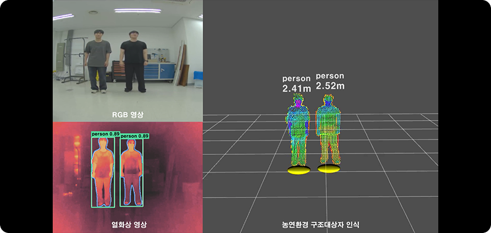
농연 가시화
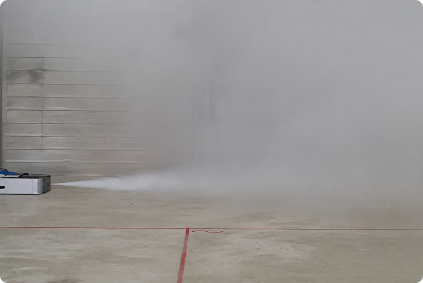
주요 객체 인식
환경지도 생성 및 자율주행
SLAM 기반 실내외 자율주행 기술 — 4족 보행 로봇, 유해가스탐지로봇
우리의 환경지도 생성 및 자율주행 기술은 실내외 연속 SLAM을 통해
조명 환경에 제약 없이 공간을 인식하고, 정밀한 탐지 및 최적 경로를 생성하는 자율주행 기술입니다.
- 진동 극복 + 다중 플랫폼 지원
- LIDAR + IMU 만으로 조명 없이 구동 가능
- 초심자도 활용 가능한 직관적인 GUI
- 천장환경 장애물 인식 및 최적경로 탐색을 통한
효율적 자율주행
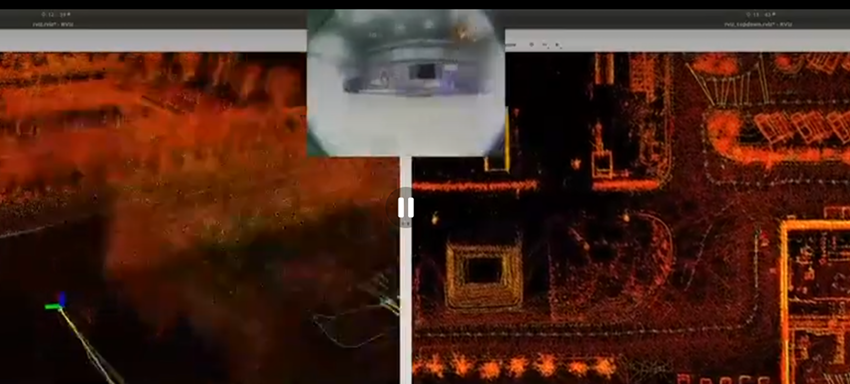

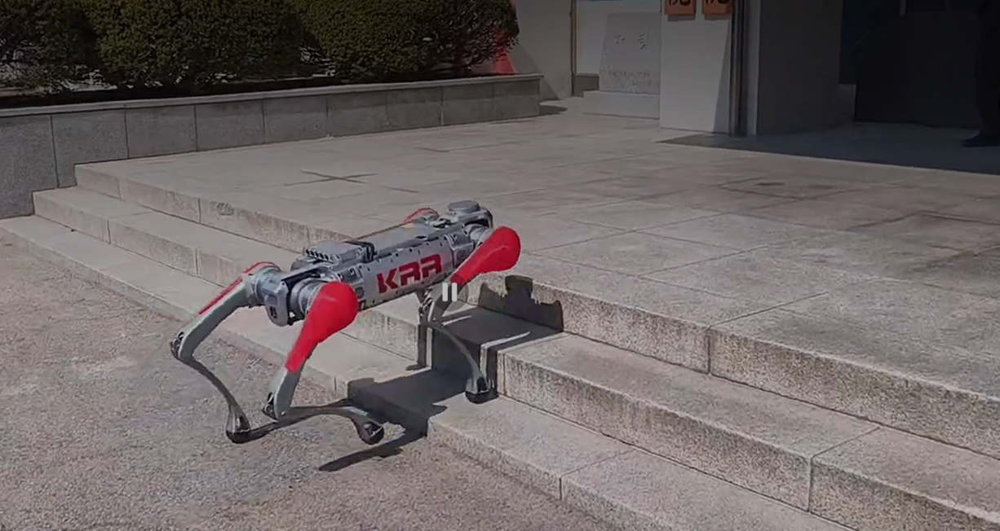
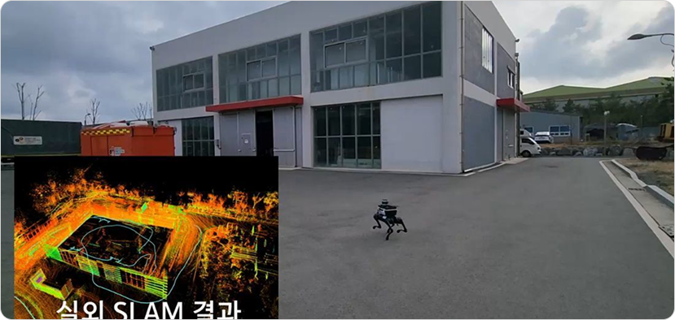
실외 SLAM 환경지도 생성

SLAM 결과물 Top View 지도

위성 지도 및 SLAM 결과물
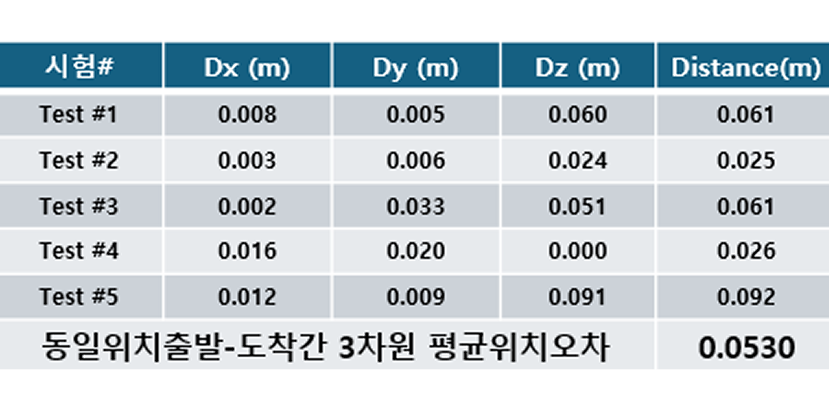
SLAM 동일 위치 출발-도착간 3차원 평균 위치 오차 결과
환경지도 생성 및 자율주행 기술 보유
4족 보행 로봇
- 4족 보행 로봇을 활용한 실내외 환경지도 생성 기술
- 다양한 모바일 플랫폼에서 환경지도 생성 경험
유해 가스 탐지 로봇
- 실내-실외 연속 SLAM을 통한 환경 지도 생성 기술
- 초심자도 로봇 주행, 환경지도 생성, 마커 표시 등의 임무를 쉽게 수행할 수 있음
소형 다중센서 통합 모듈
생존자 탐지를 위한 다중 센서 통합 솔루션
우리의 소형다중센서모듈은 협소 공간 내에 생존자 탐지를 위한
5종의 감지(카메라, 열화상, IMU, 가스, 마이크)와 소형 패턴 프로젝터가 탑재된 다중 센서 통합 솔루션입니다.
-직경 66mm, 길이 150mm
중량 129g (그리퍼 제외)
- 발열 요소 분산 배치를 통한
성능 인증화
- 5종의 센서 탑재
(카메라, 열화상, IMU, 가스, 마이크)
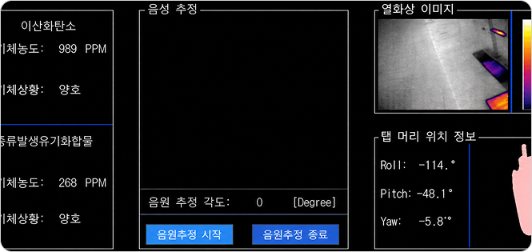
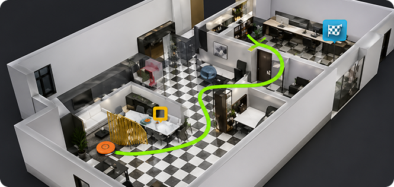
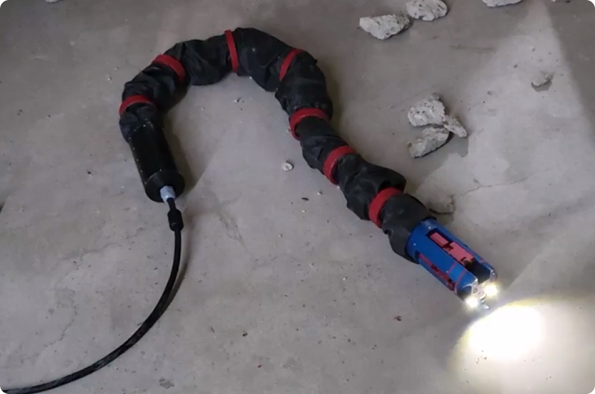
인명 탐지 레이더
연기와 벽체 등으로 시야 확보가 어려운 재난 환경에서도
UWB(Ultra-Wideband) 레이더를 활용해 인명을 탐지
- 비가시 환경(저조도, 짙은 연기, 장애물 등)에서도 정확한 탐지 가능
- 센티미터급 고해상도 단일칩 레이더 기술 적용
-투과 성능이 우수한 UWB 대역을 활용한 안테나 및 레이더 보드 설계
데이터 처리 기술
- 레이더 센서의 실시간 신호 처리 및 분석
- 분석 결과를 다른 시스템과 연동 가능
- 사용자 직관적인 인터페이스 및 UI 구현 가능
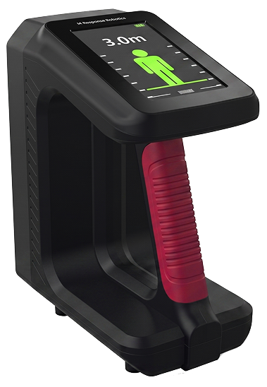
| 모델명 | UWB 레이더 - 인명 탐지 레이더 센서 | |
|---|---|---|
| 탐지 거리 | 최대 5m | |
| 배터리 | 4시간 | |
| 사이즈(cm) | 23 × 20 × 12 | |
| 주파수 | 4GHz | |
| 화면크기 | 5 inch |
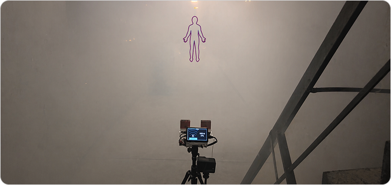
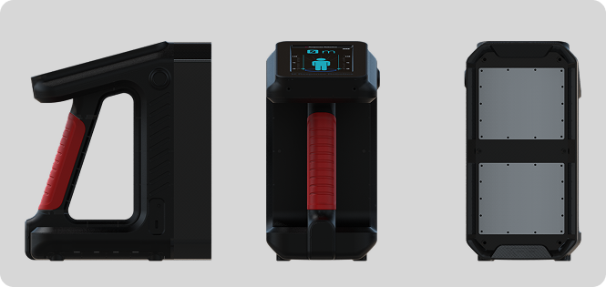
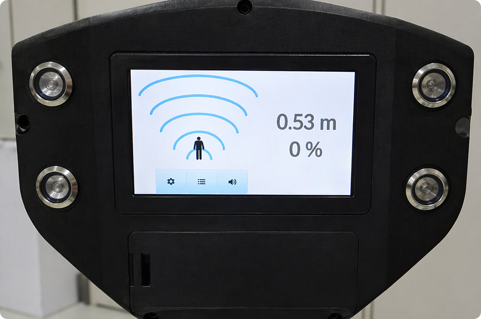
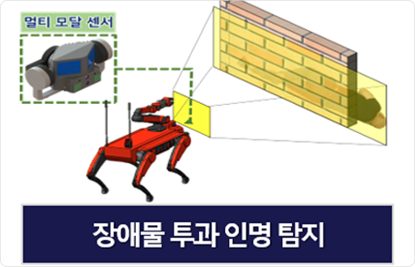
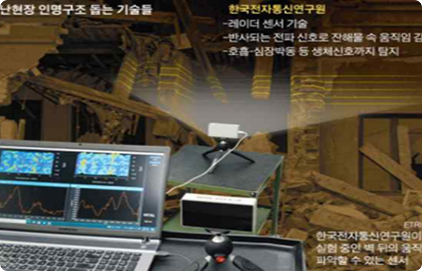
•레이더를 이용하여 현재 위치로부터 요구조자의 방향, 거리를 탐지하는 기술